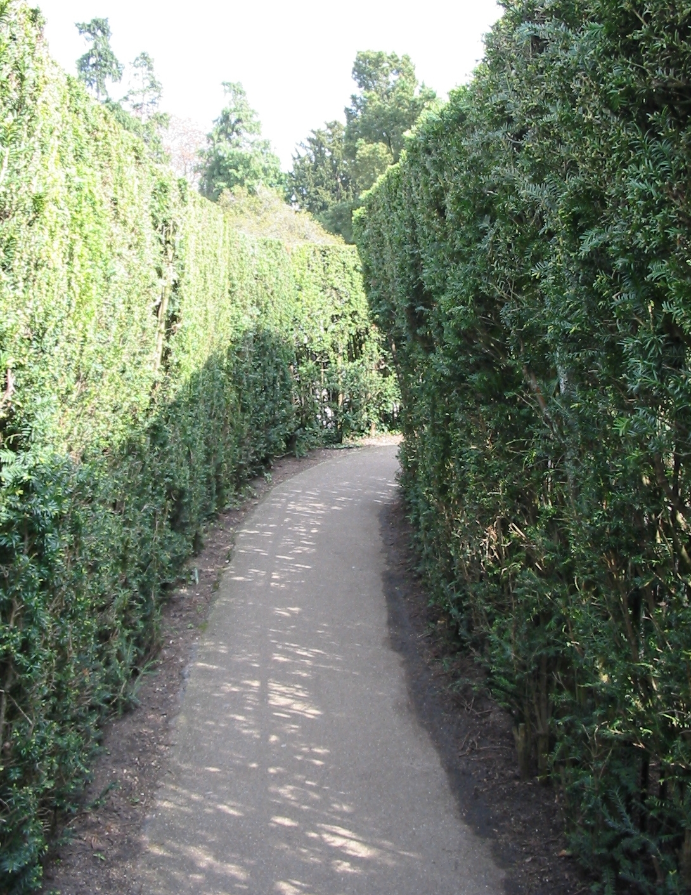
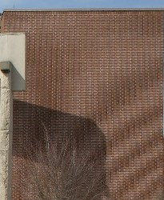
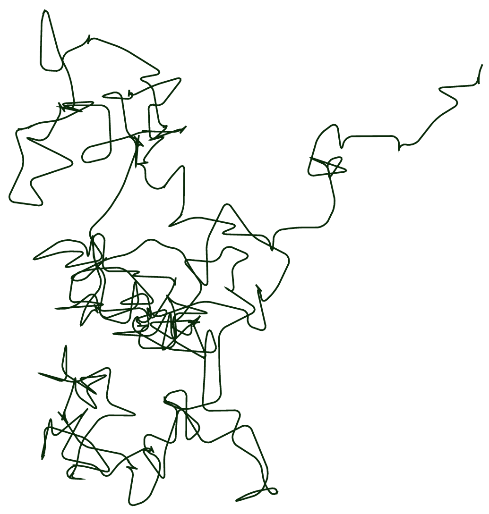

If one could attach an accurate GPSGlobal Positioning SystemGlobal Positioning System sensor to an AMRAutonomous Mobile RoboticsSelf-navigating machines moving materials and goods independently without fixed tracks or wires. They use smart software, cameras, and sensors to map spaces and safely steer around people or obstacles in real time., much of the localization problem would disappear for open space exploration. GPSGlobal Positioning SystemGlobal Positioning System would then inform the robot of its exact position and orientation, so the answers to the questions,
would always be immediately available.
Unfortunately, such a sensor is NOT currently practical for indoor application. [96] Of course, this is a misleading statement as we have technology which allows the shrinking of errors down to using real-time kinematic positioning which is used to correct GNSSGlobal Navigation Satellite SystemGlobal Navigation Satellite System, which transmits the robot’s location by longitude, latitude, altitude, and a timestamp [†-2] Hodge, V. J. Sensors and data in mobile robotics for localisation. Encyclopedia of Data Science and Machine Learning, 2223–2238 (2023), nevertheless indoor application is still a problem which GNSSGlobal Navigation Satellite SystemGlobal Navigation Satellite System is not much of help. The existing GPSGlobal Positioning SystemGlobal Positioning System network provides accuracy to within several [†-3] Wing, M. G., Eklund, A. & Kellogg, L. D. Consumer-grade global positioning system (GPS) accuracy and reliability. Journal of forestry 103, 169–173 (2005), which is still NOT the optimal accuracy for localising human-scale AMRAutonomous Mobile RoboticsSelf-navigating machines moving materials and goods independently without fixed tracks or wires. They use smart software, cameras, and sensors to map spaces and safely steer around people or obstacles in real time.s as well as miniature AMRAutonomous Mobile RoboticsSelf-navigating machines moving materials and goods independently without fixed tracks or wires. They use smart software, cameras, and sensors to map spaces and safely steer around people or obstacles in real time.s such as desk robots and the body-navigating nano-robots of the future. In addition, GPSGlobal Positioning SystemGlobal Positioning System cannot function indoors or in obstructed areas and are therefore limited in their workspace. But, looking beyond the limitations of GPSGlobal Positioning SystemGlobal Positioning System, localisation implies more than knowing one’s absolute position in the Earth’s reference frame. Consider a robot which is interacting with humans. This robot may need to identify its absolute position, but its relative position with respect to target humans is also equally important. Its localisation task can include:
- 1.
- Identifying humans using its sensor array [†-4] Bellotto, N. & Hu, H. People tracking and identification with a mobile robot in 2007 International Conference on Mechatronics and Automation (2007), 3565–3570,
- 2.
- Then determining its relative position to the humans.
Furthermore, during operation a robot will select a strategy for achieving its goals. If it intends to reach a particular location, then localisation may NOT be enough. The robot may need to acquire or build an environmental model, [97] i.e., a map representing 2D space if it is an indoor space which is level, or a 3D space if it is navigating rough terrain. which aids it in planning a path to the goal.
Localization means more than simply determining an absolute pose in space. It means building a map, and then identifying the robot's position relative to the map.
Clearly, the robot’s sensors and effectors play an essential role in all the above forms of localization.
It is because of the inaccuracy and incompleteness of these sensors and effectors localization poses difficult challenges.
Sensors are the fundamental robot input for the process of perception, and therefore the degree to which sensors can discriminate world state is paramount. Sensor noise produces a limitation on the consistency of sensor readings in the same environmental state and, therefore, on the number of useful information available from each sensor reading.
Often, the source of sensor noise problems is that some environmental features are not captured by the robot’s representation and are therefore overlooked.
For example, a vision system used for indoor navigation [98] For example, this could be indoor office building, or a warehouse. may use the colour values detected by its colour CCDCharge Coupled DeviceCharge Coupled Device camera. When the Sun is hidden by clouds, the illumination of the building’s interior changes due to windows throughout the building and as a result, hue [99] ¶[99]One of the properties of a colour, defined as the degree to which a stimulus can be described as similar to or different from stimuli that are described as red, orange, yellow, green, blue, violet within certain theories of colour vision. values are NOT constant. The colour CCDCharge Coupled DeviceCharge Coupled Device appears noisy from the robot’s perspective as if subject to random error, and the hue values obtained from the CCDCharge Coupled DeviceCharge Coupled Device camera will be unusable, unless the robot is able to note the position of the Sun and clouds in its representation.
Illumination dependency is only one example of the apparent noise in a vision-based sensor system [†-5] Sridharan, M. & Stone, P. Color learning and illumination invariance on mobile robots: A survey. Robotics and Autonomous Systems 57, 629–644 (2009). Picture jitter, signal gain, blooming and blurring are all additional sources of noise, potentially reducing the useful content of a colour video image.
Consider the noise level of ultrasonic range-measuring sensors, such as sonars, as we discussed in Perception. When a sonar transducer emits sound towards a relatively smooth and angled surface, much of the signal will coherently reflect away, failing to generate a return echo. Depending on the material characteristics, a small amount of energy may return nonetheless. When this level is close to the gain threshold of the sonar sensor, then the sonar will, at times, succeed and, at other times, fail to detect the object. From the robot’s perspective, a virtually unchanged environmental state will result in two (2) different possible sonar readings: one short, and one long which causes an non-deterministic behaviour.
The poor SNRSignal-to-Noise RatioSignal-to-Noise Ratio of a sonar sensor is further confounded by interference between multiple sonar emitters. Often, research robots have between 12 to 48 sonars on a single platform. In acoustically reflective environments, multipath interference [100] The propagation phenomenon resulting in signals reaching the receiver by two (2) or more paths. Causes of multipath can be atmospheric ducting, ionospheric reflection and refraction, and reflection from water bodies and terrestrial objects such as mountains and buildings. is possible between the sonar emissions of one transducer and the echo detection circuitry of another transducer. The result can be dramatically large errors in ranging values due to a set of coincidental angles.
Such errors occur rarely, less than 1% of the time, and are virtually random from the robot’s perspective.
In conclusion, sensor noise reduces the useful information content of sensor readings. Clearly, the solution is to take multiple readings into account, employing temporal fusion or multi-sensor fusion [101] Sensor fusion is the process of using information from several different sensors to estimate the state of a dynamic system. The resulting estimate is, in some senses, better than it would be if the sensors were used individually [†-6] Galar, D. & Kumar, U. Chapter 1 - Sensors and Data Acquisition in eMaintenance (eds Galar, D. & Kumar, U.) 1–72 (Academic Press, 2017). to increase the overall information content of the robot’s inputs.
Aliasing is the second major shortcoming of AMRAutonomous Mobile RoboticsSelf-navigating machines moving materials and goods independently without fixed tracks or wires. They use smart software, cameras, and sensors to map spaces and safely steer around people or obstacles in real time. sensors which cause them to give little information content, further amplifying the problem of perception and localisation.
The problem, known as sensor aliasing, is a phenomenon that humans seldom encounter. The human sensory system, particularly the visual system, tends to receive unique inputs in each unique local state within normal usage [†-7] Williams, D. R. Aliasing in human foveal vision. Vision research 25, 195–205 (1985). In other words, every different place looks different. The power of this unique mapping is only apparent when one considers situations where this fails to hold.
Consider moving through an unfamiliar building that is completely
dark. When the visual system sees only black, one’s localisation system quickly degrades.
Another useful example is that of a human-sized maze made from tall hedges. [102] ¶ 
In robots, the non-uniqueness of sensors readings, or sensor aliasing, [103] ¶ 
A classical problem with sonar-based robots involves distinguishing between humans and inanimate objects in an indoor setting [†-9] Blumrosen, G., Fishman, B. & Yovel, Y. Noncontact wideband sonar for human activity detection and classification. IEEE Sensors Journal 14, 4043–4054 (2014), Sabatini, A. M. & Colla, V. A method for sonar based recognition of walking people. Robotics and Autonomous Systems 25, 117–126 (1998).
With sonar alone, these states are aliased and differentiation is impossible.
The navigation problem due to sensor aliasing is that, even with noise-free sensors, the amount of information is generally insufficient to identify the robot’s accurate position from a single sensor’s reading. Therefore techniques needs to be employed by the robot programmer which base the robot’s localisation on a series of readings and sufficient information to recover the robot’s position over time.
The challenges of localization does NOT lie with sensor technologies alone. Just as robot sensors are noisy, limiting the information content of the signal, so do the robot effectors.
A single action taken by a AMRAutonomous Mobile RoboticsSelf-navigating machines moving materials and goods independently without fixed tracks or wires. They use smart software, cameras, and sensors to map spaces and safely steer around people or obstacles in real time. may have several different possible results, even though from the robot’s point of view the initial state before the action was taken is well-known.
In short, AMRAutonomous Mobile RoboticsSelf-navigating machines moving materials and goods
independently without fixed tracks or wires. They use smart software, cameras, and sensors to map
spaces and safely steer around people or obstacles in real time. effectors introduce uncertainty about
future state. [104] ¶ 
The true source of error generally lies in an incomplete model of the environment.
All of these unmodeled sources of error result in:
-
inaccuracy between the physical motion of the robot,
-
the intended motion of the robot, and
-
the proprioceptive sensor estimates of motion.
In odometry and dead reckoning [105] The process of calculating the current position of a moving object by using a previously determined position, or fix, and incorporating estimates of speed, heading (or direction or course), and elapsed time. the position update is based on proprioceptive sensors. The movement of the robot, sensed with wheel encoders and/or heading sensors is integrated to compute position. Because the sensor measurement errors are integrated, the position error accumulates over time. Therefore the position has to be updated from time to time by other localisation mechanisms. Otherwise the robot is NOT able to maintain a meaningful position estimate in long run.
In the following we will concentrate on odometry based on the wheel sensor readings of a differential drive robot only [†-10] Batavia, P. H. & Nourbakhsh, I. Path planning for the Cye personal robot in Proceedings. 2000 IEEE/RSJ International Conference on Intelligent Robots and Systems (IROS 2000)(Cat. No. 00CH37113) 1 (2000), 15–20. [106] Using additional heading sensors, such as a gyroscope, can help to reduce the cumulative errors, but the main problems remain the same.
There are many sources of odometric error, from environmental factors to resolution:
-
Limited resolution during integration, [107] time increments, measurement resolution
-
Misalignment of wheels causing deterministic error,
-
Unequal wheel diameter, which again, causing deterministic error,
-
Unequal floor contact, which can cause slipping during operation.
Some of the errors might be deterministic [108] To reiterate, deterministic errors are any errors which can be avoided and are generally caused by bad design or poorly calibrated sensors. (systematic). However, there are still a number of non-deterministic (random) errors which remain, leading to uncertainties in position estimation over time. From a geometric point of view one can classify the errors into three (3) types:
- Range error
-
Integrated path length of the robot movement, as in the sum of wheel motion.
- Turn error
-
Similar to range error, but for turns which are difference of the wheel motions.
- Drift error
-
difference in the error of the wheels leads to an error in the robot’s angular orientation.
Over long periods of time, turn and drift errors far outweigh range errors, as their contribute to the overall position error is non-linear. Consider a robot, whose position is initially perfectly well-known, moving forward in a straight line along the x-axis. The error in the y-axis introduced by a move of meters will have a component of , which can be quite large as the angular error grows. Over time, as an AMRAutonomous Mobile RoboticsSelf-navigating machines moving materials and goods independently without fixed tracks or wires. They use smart software, cameras, and sensors to map spaces and safely steer around people or obstacles in real time. moves about the environment, the rotational error between its internal reference frame and its original reference frame grows quickly. As the robot moves away from the origin of these reference frames, the resulting linear error in position grows quite large. It is instructive to establish an error model for odometric accuracy and see how the errors propagate over time.
Generally the pose [109] i.e., it’s current position. of a robot is represented by the vector:
For a differential drive robot the position can be estimated starting from a known position by integrating the movement. [110] i.e., summing the incremental travel distances. For a discrete system with a fixed sampling interval the incremental travel distances are:
where is the path traveled in the last sampling interval, are the values representing the right and left wheel, and finally is the distance between two (2) wheels of the differential drive robot. Therefore we can calculate the updated position :
| (4.1) |
As discussed previously, odometric position updates can give only a rough estimate of the actual position. Due to integration errors of the uncertainties of and the motion errors during the incremental motion (), the position error based on odometry integration grows with time.
In the next step we will establish an error model for the integrated position to obtain the covariance matrix . To do so, we assume that at the starting point the initial covariance matrix is known. For the motion increment (), we will assume the following covariance matrix :
| (4.2) |
where and are the distances travelled by each wheel, and , are error constants representing the non-deterministic parameters of the motor drive and the wheel-floor interaction. As we can see in Eq. (4.2) we’ve made the following assumption:
-
The two (2) errors of the individually driven wheels are independent. [111] If there is more knowledge regarding the actual robot kinematics, the correlation terms of the covariance matrix could also be used.
-
The errors are proportional to the absolute value of the travelled distances .
These assumptions, while NOT perfect in the slightest, are nevertheless suitable and will therefore be used for the further development of the error model.
The motion errors are due to unprecise movement because of deformation of wheel, slippage, unequal floor, errors in encoders, …
The values for the error constants and depend on the robot and the environment and should be experimentally determined by performing and analyzing representative movements.
If we assume that and are uncorrelated and the derivation of (equ. (5.7)) can be reasonably approximated by the first-order Taylor expansion (linearization) we conclude, using the error propagation law (see section 4.2.3):
| (4.3) |
The covariance matrix is, of course, always given by the of the previous step, and therefore can be calculated after specifying an initial value (e.g. 0):
Using Eq. (??) , we can develop the two (2) Jacobians and :
-
¶
- SNRSignal-to-Noise Ratio
Signal-to-Noise Ratio
-
¶
- CCDCharge Coupled Device
Charge Coupled Device
-
¶
- GNSSGlobal Navigation Satellite System
Global Navigation Satellite System
-
¶
- AMRAutonomous Mobile Robotics
Self-navigating machines moving materials and goods independently without fixed tracks or wires. They use smart software, cameras, and sensors to map spaces and safely steer around people or obstacles in real time.
-
¶
- GPSGlobal Positioning System
Global Positioning System
- 1.
- Leonard, J. J. & Durrant-Whyte, H. F. Directed sonar sensing for mobile robot navigation (Springer Science & Business Media, 2012)
- 2.
- Hodge, V. J. Sensors and data in mobile robotics for localisation. Encyclopedia of Data Science and Machine Learning, 2223–2238 (2023)
- 3.
- Wing, M. G., Eklund, A. & Kellogg, L. D. Consumer-grade global positioning system (GPS) accuracy and reliability. Journal of forestry 103, 169–173 (2005)
- 4.
- Bellotto, N. & Hu, H. People tracking and identification with a mobile robot in 2007 International Conference on Mechatronics and Automation (2007), 3565–3570
- 5.
- Sridharan, M. & Stone, P. Color learning and illumination invariance on mobile robots: A survey. Robotics and Autonomous Systems 57, 629–644 (2009)
- 6.
- Galar, D. & Kumar, U. Chapter 1 - Sensors and Data Acquisition in eMaintenance (eds Galar, D. & Kumar, U.) 1–72 (Academic Press, 2017)
- 7.
- Williams, D. R. Aliasing in human foveal vision. Vision research 25, 195–205 (1985)
- 8.
- maksim. An example of a poorly sampled brick pattern 2006
- 9.
- Blumrosen, G., Fishman, B. & Yovel, Y. Noncontact wideband sonar for human activity detection and classification. IEEE Sensors Journal 14, 4043–4054 (2014), Sabatini, A. M. & Colla, V. A method for sonar based recognition of walking people. Robotics and Autonomous Systems 25, 117–126 (1998)
- 10.
- Batavia, P. H. & Nourbakhsh, I. Path planning for the Cye personal robot in Proceedings. 2000 IEEE/RSJ International Conference on Intelligent Robots and Systems (IROS 2000)(Cat. No. 00CH37113) 1 (2000), 15–20
- [96].
- Of course, this is a misleading statement as we have technology which allows the shrinking of errors down to using real-time kinematic positioning which is used to correct GNSSGlobal Navigation Satellite SystemGlobal Navigation Satellite System, which transmits the robot’s location by longitude, latitude, altitude, and a timestamp [†-2] Hodge, V. J. Sensors and data in mobile robotics for localisation. Encyclopedia of Data Science and Machine Learning, 2223–2238 (2023), nevertheless indoor application is still a problem which GNSSGlobal Navigation Satellite SystemGlobal Navigation Satellite System is not much of help.
- [97].
- i.e., a map representing 2D space if it is an indoor space which is level, or a 3D space if it is navigating rough terrain.
- [98].
- For example, this could be indoor office building, or a warehouse.
- [100].
- The propagation phenomenon resulting in signals reaching the receiver by two (2) or more paths. Causes of multipath can be atmospheric ducting, ionospheric reflection and refraction, and reflection from water bodies and terrestrial objects such as mountains and buildings.
- [101].
- Sensor fusion is the process of using information from several different sensors to estimate the state of a dynamic system. The resulting estimate is, in some senses, better than it would be if the sensors were used individually [†-6] Galar, D. & Kumar, U. Chapter 1 - Sensors and Data Acquisition in eMaintenance (eds Galar, D. & Kumar, U.) 1–72 (Academic Press, 2017).
- [105].
- The process of calculating the current position of a moving object by using a previously determined position, or fix, and incorporating estimates of speed, heading (or direction or course), and elapsed time.
- [106].
- Using additional heading sensors, such as a gyroscope, can help to reduce the cumulative errors, but the main problems remain the same.
- [107].
- time increments, measurement resolution
- [108].
- To reiterate, deterministic errors are any errors which can be avoided and are generally caused by bad design or poorly calibrated sensors.
- [109].
- i.e., it’s current position.
- [110].
- i.e., summing the incremental travel distances.
- [111].
- If there is more knowledge regarding the actual robot kinematics, the correlation terms of the covariance matrix could also be used.